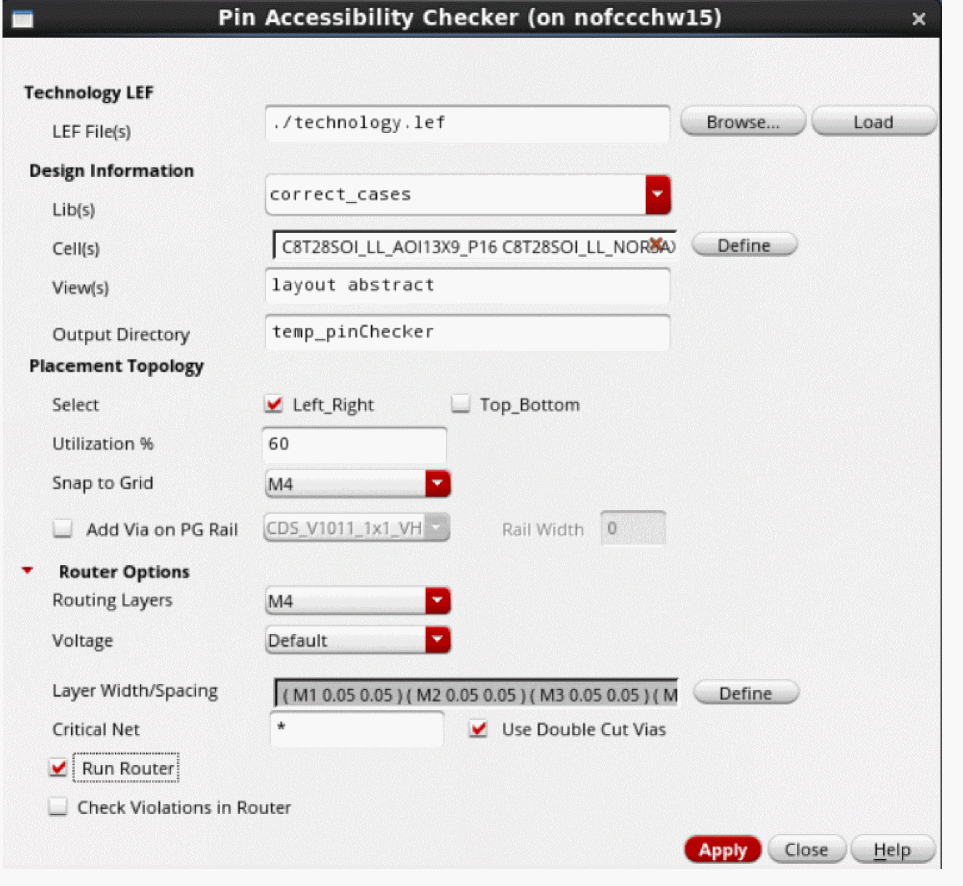

Running the Pin Accessibility Checker
To run the Pin Accessibility Checker:
-
In CIW, select Tools – Check Pin Accessibility.
The Pin Accessibility Checker form appears
 - In the Technology LEF section:
-
In the Design Information section:
- Select one or more standard cell libraries from the Lib(s) list. Standard cell names in the Cell(s) field are automatically populated based on the selected libraries.
- Specify one or more cells in the Cell(s) field. Click Define to open the Browse Cell(s) window, from which you can select the required standard cells.
- Specify one or more views in the View(s) field.
- In Output Directory, specify the name of the directory in which all temporary files and views are to be stored.
-
In the Placement Topology section:
- Select a placement topology for the standard cells from the Select list in the Placement Topology section. The available options are:
- Specify the cell utilization in the Utilization% field. This is the area to be used for routing.
- From the Snap to Grid drop-down list, select the routing metal layer grid to which the cells are to be snapped.
- From the Add Via on PG Rail drop-down list, select a value if vias are to be generated on the power or ground rails.
- Specify the width of rails in the Rail Width field. For example, you can make the width wider than the one drawn in the layout.
-
In the Router Options section:
- Select the highest routing layer from the Routing Layers list. All lower metal layers up to the specified layer are used for routing.
-
Specify the width and spacing values for each routing layer in the Layer Width/Spacing field. Click Define to open the Layer Width Spacing constraint table in a new window. You can edit the values directly in the table. Close the window to populate values in the Layer Width/Spacing field.
-
Select a voltage value from the Voltage drop-down list to switch on high voltage rule-based routing.
This option is applicable only to input designs with voltage spacing rules defined in the technology file. - Specify the nets that are to be routed first in the Critical Net field.
- Select Double Cut Vias to insert double-cut vias in critical nets.
- Select Run Router to run the Innovus NanoRoute router on the standard cell extended pins view and generate a routed view.
- Select Check Violations in Router to open the Innovus router graphical user interface and view any violations in the routed topology view after running the router. This requires the Cadence Innovus license to be checked out.
-
Click Apply to run the router and generate the Pin Accessibility Check report.

The Pin Accessibility Checker report lists violations, critical net statistics for each cell, and length of metals in non-preferred direction. You can run the tool on different topologies to identify the one that suits your requirements.
When you select Use Double Cut Vias and specify a Critical Net value, the Pin Accessibility Checker report displays the number of single-cut and double-cut vias per net for each cell.
The Pin Accessibility Checker report also includes information about the length of routing metals in the non-preferred direction.
In a routed view, violation markers are created over single-cut vias in the Annotation Browser as shown in the following figure.
When you select Check Violations in Router, a routed view appears in the Innovus user interface, which lets you analyze the violations reported during routing.
vfpPACRunWithInnovusLic environment variable to use the VDI flow for running the router without displaying the Innovus router user interface.The Pin Accessibility Checker report is stored at a default location. This report is saved as a log file for each cell and maintains the details of DRC issues and via information. You can open the log file using the following path in the CIW.
<temporary_directory_name>/<newly_created_library_directory>/<cellName>_pac/<routed_view_name>/<cellName>_pac.log
Related Topics
Return to top